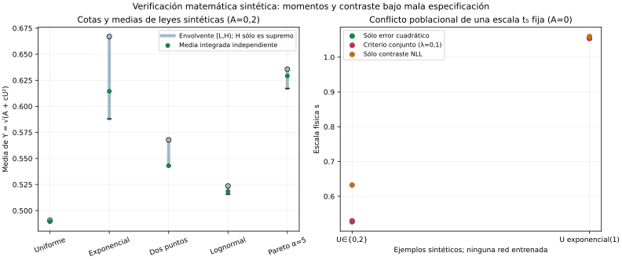

Anexo F. Cabeza de momentos: formulación y admisibilidad#
:::{note} Este anexo conserva el detalle matemático de la propuesta integrada en los capítulos 6 y 7. El dictamen posterior del anexo G corrige localizadores, añade un control faltante y delimita las garantías: la adaptación no se selecciona todavía como aporte original ni pasa a otro piloto en ese corte. :::
16 de noviembre de 2026. Propuesta matemática de desarrollo; sin nueva red implementada o entrenada. Se conserva CNN causal → LSTM unidireccional → atención temporal. La modificación propuesta pertenece a la salida y a su pérdida. La cabeza aditiva del cierre v2 continúa como referencia predictiva; no se ha elegido un modelo superior al Top 10.
F.1 Limitación que se investiga#
En v2, la cabeza half-t5 compartía una escala entre la media de σ₇ y la NLL de la magnitud de innovación. Bajo mala especificación esos objetivos pueden tener óptimos distintos. Un contraejemplo poblacional lo demuestra: con A=0, P(U=0)=3/4 y P(U=2)=1/4, el óptimo MSE tiene escala al cuadrado 9π²/320≈0,277583, mientras el óptimo NLL tiene 0,4. La verificación incluye una exponencial continua. Se comparan riesgos poblacionales sintéticos, conservando la varianza irreducible; no se presenta MSE esperada cero.
Esto demuestra un conflicto posible, no la causa del RMSE observado en Bitcoin. La escala libre t5 sí puede representar las medias puntuales de esta tarea. El problema general de NLL y estimación de media ya está documentado en Faithful, Stirn et al. (2023), que será un control necesario.
El paper guía continúa siendo TimeMixer. Su limitación de calendario medida en ETTh1 no se transfiere al adaptador BTC sin calendario. La relación documentada con el paper guía distingue la evidencia de E2 de la nueva limitación propuesta.
F.2 La misma red, una salida diferente#
Con los seis retornos conocidos al origen se calcula
Se mantienen D7×5 OHLCV, horizonte de un día y σ₇ poblacional sin anualizar. A es observable; U,V,V² son etiquetas futuras, nunca entradas. Tres lecturas del contexto estimarían momentos y una posición de la media:
Con momentos verdaderos positivos y finitos, la media condicional pertenece exactamente al rango realizable [L,H) si q>m²; la cota inferior se alcanza y la superior sólo es supremo. Si q=m², ambas coinciden. Con momentos estimados, la región calculada puede no contener la media verdadera. No es un intervalo de predicción ni de confianza y no acota cada observación futura.
La inicialización propuesta b=√8,d=1 evita comenzar en los puntos de derivada nula de ambas ramas. La relación inicial q/m²=9 toma como ancla t5, sin ajuste por desempeño. Se proponen escalas de ajuste positivas y pesos auxiliares 0,1; no se han ejecutado ni congelado como protocolo. El conteo analítico es 1236 parámetros, frente a 1210 de v2, con las mismas 1197 cantidades del tronco y atención más tres lecturas activas. La especificación completa distingue precisiones, bordes e inicialización.
F.3 Propiedad demostrada y límites#
La pérdida propuesta combina MSE de σ₇ con dos scores conocidos de media, normalizados mediante escalas calculadas sólo en ajuste:
donde Ṽ=V/s_u², m̃=m/s_u² y q̃=q/s_u⁴. Bajo m0=E[V|X]>0, q0=E[V²|X]<∞ y una clase que pueda representar conjuntamente los valores verdaderos, el exceso de riesgo condicional es
La demostración completa descargable incluye cotas, extremales, dominio de la media y consistencia condicional. La cota inferior se especializa de Merhav (2023), ec. (8); los scores tienen antecedentes en Gneiting (2011), §3.1. No se reclama una desigualdad o score nuevos.
No se deducen convergencia de la red, mejora en muestra finita o la garantía de trayectoria de Faithful. La esperanza auxiliar requiere E[U⁴] finita; no exige octavo momento para definirla, pero los gradientes pueden tener varianza infinita sin condiciones adicionales. El caso verdadero m0=q0=0 queda fuera del teorema logarítmico: necesita una rama separada. El verificador documenta también redondeo, overflow y puntos planos.
F.4 Comprobación numérica sin datos de mercado#
Se integraron cinco leyes artificiales —uniforme, exponencial, dos puntos, lognormal y Pareto α5— en veinte combinaciones de ley y A. Se comprobaron extremales, homogeneidad, derivadas y exceso de riesgo. Hubo cuatro optimizaciones escalares de riesgos sintéticos; cero redes nuevas, lecturas de datos o inferencias de mercado. Estas pruebas no acreditan R1 ni R3.

Figura 1 Verificación artificial. El círculo abierto representa el supremo superior, no una cota alcanzada por leyes no degeneradas. Las escalas de la derecha ilustran un conflicto posible bajo mala especificación; no explican por sí solas el resultado de BTC.#
Los resultados reproducibles, el verificador escalar y las pruebas están en GitHub. La integración continua comprueba tanto el cálculo como las copias descargables.
F.5 Qué falta para seleccionar un aporte original#
La revisión focal compara nueve trabajos cercanos y distingue ocho lecturas focales del cuerpo de una fuente examinada sólo por metadatos/resumen. No identificar una combinación exacta en esa búsqueda no demuestra su ausencia. Las doce consultas web y los tres intentos nativos bloqueados antes de respuesta no completan la revisión de §6.3. Faltan búsquedas nativas reproducibles, seguimiento por citas, repetición antes de entrega y concepto de una persona externa al diseño. Los agentes de IA no sustituyen esa verificación.
La hipótesis predictiva propuesta es reducir RMSE respecto de una cabeza de media libre con las mismas tres lecturas activas y los mismos scores, sin deterioro relevante en extremos. El diseño futuro deberá contrastar además un control inspirado explícitamente en Faithful, el plug-in Jensen, la versión con q=9m² fijo y las referencias v2. El documento de propuesta especifica qué aísla cada control y las diferencias de capacidad. Los rivales congelados de E2 no se reajustan.
Si los controles simples igualan o mejoran su desempeño, o la envolvente y el segundo momento no aportan bajo el protocolo fijado, la explicación propuesta no queda respaldada. Un resultado impreciso se reportaría como no concluyente. Los grupos por objetivo realizado se usan sólo para diagnóstico retrospectivo, no para seleccionar un modelo al predecir.
Decisión de este corte: conservar para revisión de admisibilidad; no promover a modelo original ni lanzar otro piloto. R1 continúa pendiente; esta cabeza aún no implementada no acredita R2; R3 no fue evaluado. La especificación descargable, la procedencia y uso de IA y la bitácora hacen revisable esta decisión.
El número de recetas neuronales entrenadas en mercado sigue siendo cinco entre v1 y v2. El consumo de desarrollo no cambia: 556,212659362 de 1200 segundos. No se alteran el margen confirmatorio heredado, las fuentes, los resultados anteriores o los notebooks. Tras resolver admisibilidad deberán cerrarse controles, presupuesto y protocolo antes de una eventual implementación.